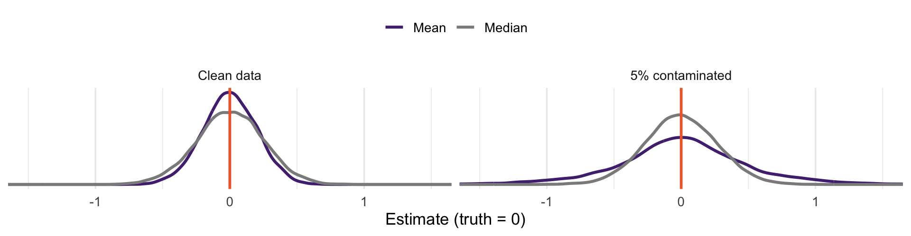
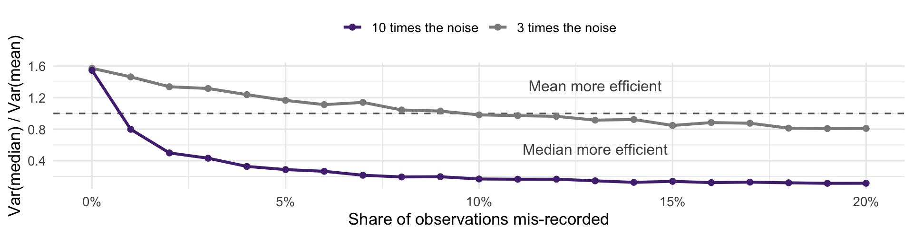

Show the simulation
| n | SD of sample mean | sigma / sqrt(n) |
|---|---|---|
| 10 | 7.866 | 7.945 |
| 100 | 2.514 | 2.513 |
| 1000 | 0.797 | 0.795 |
| 5000 | 0.357 | 0.355 |
What makes a guess a good guess
Last set of slides: an estimator is a rule to produce an estimate of a population parameter we care about.
Now: given several possible estimators, how do we choose?
Three words that get used interchangeably, but mean different things.
Estimand - the thing you want to learn. Aka population parameter, \(\theta\). Fixed, unknown.
Estimator - the rule you apply to data. \(\widehat{\theta} = \frac{1}{n}\sum X_i\). A function.
Estimate - the number you got this time. \(\widehat{\theta} = 70.6\).
The estimator is the recipe; the estimate is the dish. We evaluate the process, not the result -you cannot tell from one number whether the rule that produced it was any good.
To estimate the center of a population you could use:
The sample mean
The sample median
The midrange, \((\min + \max)/2\)
The first observation you happened to draw
All four are legitimate estimators. The last one is even unbiased. We need criteria to tell them apart.
\[\text{Bias}(\widehat{\theta}) = E[\widehat{\theta}] - \theta\]
An estimator is unbiased if its sampling distribution is centered on the truth.
\(E[\bar{X}] = \mu\): the sample mean is unbiased, for any population
It says nothing about any single estimate being close
“Right on average” is a property of the procedure.
As \(n\) grows, the estimator converges on the truth: \(\widehat{\theta} \to \theta\).
| n | SD of sample mean | sigma / sqrt(n) |
|---|---|---|
| 10 | 7.866 | 7.945 |
| 100 | 2.514 | 2.513 |
| 1000 | 0.797 | 0.795 |
| 5000 | 0.357 | 0.355 |
The sampling distribution collapses onto a point - and crucially, onto the true value.
Unbiasedness is about the center at a given \(n\)
Consistency is about where the estimator ends up as \(n \to \infty\)
The sample variance \(s^2\) is unbiased for \(\sigma^2\). But \(s = \sqrt{s^2}\) is biased for \(\sigma\) - the square root of an unbiased estimator is not necessarily unbiased.
| n | E[s] | Bias (true sigma = 1) |
|---|---|---|
| 3 | 0.8817 | -0.1183 |
| 5 | 0.9441 | -0.0559 |
| 10 | 0.9731 | -0.0269 |
| 50 | 0.9958 | -0.0042 |
| 500 | 0.9991 | -0.0009 |
Biased at every finite \(n\) — but the bias shrinks toward zero. That is what makes it consistent.
Imagine fitting a regression without controlling for a confounder. Then, no matter how big our sample is,we never get to the right estimate! The true slope is 1.0:
set.seed(8410)
tibble(n = c(100, 1000, 10000, 100000)) |>
mutate(`E[beta-hat]` = round(map_dbl(n, function(nn)
mean(replicate(150, {
u <- rnorm(nn); x <- 0.7 * u + rnorm(nn); y <- 1.0 * x + 1.5 * u + rnorm(nn)
coef(lm(y ~ x))[2]
}))), 3)) |>
knitr::kable(format.args = list(big.mark = ",", scientific = FALSE))| n | E[beta-hat] |
|---|---|
| 100 | 1.703 |
| 1,000 | 1.703 |
| 10,000 | 1.704 |
| 100,000 | 1.704 |
It converges, tightly and reliably… to 1.70, not to 1.0
This estimator is inconsistent. The error does not shrink; it has asymptotic bias.
More data makes you more confident in the wrong number. This is bad, and it is why we worry about omitted variables.
Use only the first observation, no matter how many you collect:
set.seed(8410)
tibble(n = c(10, 1000, 100000)) |>
mutate(`E[estimate]` = round(map_dbl(n, ~ mean(replicate(20000, rnorm(.x, mean = 5)[1]))), 3),
`SD of estimate` = round(map_dbl(n, ~ sd(replicate(20000, rnorm(.x, mean = 5)[1]))), 3)) |>
knitr::kable(format.args = list(big.mark = ",", scientific = FALSE))| n | E[estimate] | SD of estimate |
|---|---|---|
| 10 | 4.992 | 1.001 |
| 1,000 | 4.996 | 1.008 |
| 100,000 | 4.991 | 1.009 |
Centered on the truth forever, and never gets any better.
Unbiased, but useless because it’s inconsistent.
| Bias → 0 as \(n\) grows | Bias does not → 0 | |
|---|---|---|
| Spread → 0 | Consistent | Inconsistent (Case 2) |
| Spread stays | Inconsistent (Case 3) | Inconsistent |
Consistency needs both things to be true: the spread collapses and it collapses on \(\theta\)
A consistent estimator’s bias necessarily vanishes - that is what “converges to \(\theta\)” means (More on this next time)
“Biased but consistent” always means biased in small samples. If the bias survives to infinity, the estimator is not consistent - it is asymptotically biased.
Consistency. Unbiasedness at every \(n\) is a luxury we frequently give up.
Many workhorse estimators - instrumental variables, most maximum likelihood, fixed-effects models - are biased in small samples and consistent
What is never acceptable is inconsistency, because more data = more precise wrong answer.
Thus, “we have a lot of data” is not a response to a design objection.
Among unbiased estimators, prefer the one with smaller variance.
Both the sample mean and the sample median are sensible estimators of the center of a symmetric distribution
For normal data, the mean has smaller variance - it is more efficient
For heavy-tailed data with outliers, the median can win
The mean uses the size of every observation. Each one pulls the estimate in proportion to how far out it lives.
The median uses only the order: is each observation above or below the middle?
The median throws away information about distance. That costs precision when distances are informative, and helps when the far-out values are mostly noise.
Write \(\widehat{m}\) for the sample median. For a symmetric population with center \(m\), density \(f\), and variance \(\sigma^2\):
\[\text{Var}(\bar{X}) = \frac{\sigma^2}{n} \qquad\qquad \text{Var}(\widehat{m}) \approx \frac{1}{4n\,f(m)^2}\]
The second is a large-sample result; we won’t prove it.
The mean’s variance depends on \(\sigma^2\), which the tails drive
The median’s depends on \(f(m)\): how densely the data crowd the center. The more observations near the middle, the more tightly the halfway point is pinned down.
For a normal, \(f(m) = 1/(\sigma\sqrt{2\pi})\), so \(\text{Var}(\widehat{m}) \approx \tfrac{\pi}{2} \cdot \tfrac{\sigma^2}{n}\), about 57% larger than the mean’s
A median from 100 normal observations is about as precise as a mean from 65 observations. Heavy tails inflate \(\sigma^2\) but barely move \(f(m)\).
Samples of 25. Clean: centered around pop parameter plus \(N(0, 1)\) noise. Contaminated: 5% of observations are badly mis-recorded (careless respondents, coding errors), with noise 10 times as large. The noise is symmetric, so median stays unbiased.
set.seed(8410)
# Each contaminated observation has a 5% chance of noise 10 times as large
r_contam <- function(n) rnorm(n, sd = ifelse(runif(n) < 0.05, 10, 1))
clean <- replicate(10000, { x <- rnorm(25); c(Mean = mean(x), Median = median(x)) })
dirty <- replicate(10000, { x <- r_contam(25); c(Mean = mean(x), Median = median(x)) })
sims <- bind_rows(as_tibble(t(clean)) |> mutate(data = "Clean data"),
as_tibble(t(dirty)) |> mutate(data = "5% contaminated")) |>
pivot_longer(c(Mean, Median), names_to = "estimator", values_to = "estimate") |>
mutate(data = fct_inorder(data))
ggplot(sims, aes(estimate, color = estimator)) +
geom_density(linewidth = 1.1, key_glyph = "path") +
geom_vline(xintercept = 0, color = "#F66733", linewidth = 1) +
facet_wrap(~ data) +
coord_cartesian(xlim = c(-1.5, 1.5)) +
scale_color_manual(values = c("Mean" = "#522D80", "Median" = "grey55")) +
labs(x = "Estimate (truth = 0)", y = NULL, color = NULL) +
theme_minimal(base_size = 13) +
theme(legend.position = "top", axis.text.y = element_blank(),
panel.grid.major.y = element_blank(), panel.grid.minor.y = element_blank())
Contamination multiplies \(\sigma^2\) by about six (\(0.95 \cdot 1 + 0.05 \cdot 10^2 = 5.95\)) but barely moves \(f(m)\) (\(0.95 + 0.05/10 = 0.955\)). Plug both into the two variance formulas and compare with the simulation:
| Simulated SD (formula’s prediction) | Mean | Median |
|---|---|---|
| Clean data | 0.20 (0.20) | 0.25 (0.25) |
| 5% contaminated | 0.49 (0.49) | 0.27 (0.26) |
The mean’s SD more than doubles; the median’s barely moves. Heavy tails punish the estimator that cares about distance from the mean.
Vary the share of bad observations and how bad they are. Below the dashed line, the median is more efficient.
set.seed(8410)
# For each share of bad observations and each noise multiplier k,
# draw 4,000 samples of 25 and compare the two sampling variances
xover <- expand_grid(share = (0:20) / 100, k = c(3, 10)) |>
mutate(ratio = map2_dbl(share, k, function(share, k) {
est <- replicate(4000, {
x <- rnorm(25, sd = ifelse(runif(25) < share, k, 1))
c(mean(x), median(x))
})
var(est[2, ]) / var(est[1, ])
}),
noise = paste(k, "times the noise"))
ggplot(xover, aes(share, ratio, color = noise)) +
geom_hline(yintercept = 1, color = "grey40", linetype = "dashed") +
geom_line(linewidth = 1.1) +
geom_point(size = 1.8) +
annotate("text", x = 0.13, y = 1.35, label = "Mean more efficient", color = "grey30", size = 4.2) +
annotate("text", x = 0.13, y = 0.55, label = "Median more efficient", color = "grey30", size = 4.2) +
scale_x_continuous(labels = scales::label_percent()) +
scale_color_manual(values = c("3 times the noise" = "grey55", "10 times the noise" = "#522D80")) +
labs(x = "Share of observations mis-recorded", y = "Var(median) / Var(mean)", color = NULL) +
theme_minimal(base_size = 13) +
theme(legend.position = "top")
Efficiency is a property of an estimator and a population. No estimator is best universally.
Median can be useful in the presence of outliers.
Caution: for skewed data (incomes, campaign donations, war casualties) the mean and median target different estimands. Choosing between them is a question about what you want to know.
Sometimes accepting a little bias buys a large reduction in variance
Total error is usually measured by mean squared error:
\[MSE(\widehat{\theta}) = \text{Bias}(\widehat{\theta})^2 + \text{Var}(\widehat{\theta})\]
This is the central tradeoff in machine learning, and it is why regularized estimators (A Quant 3 topic) - ridge, lasso, shrinkage - deliberately introduce bias. Unbiasedness is not sacred.
We defined the sample variance as
\[s^2 = \frac{1}{n-1}\sum_{i=1}^{n}(x_i - \bar{x})^2\]
and I said the \(n-1\) “corrects a bias.” I promised an explanation!
Treat the 7,388 ANES respondents as a population. Then, the true variance is 631.2.
res <- map_dfr(c(5, 10, 30), function(n) {
b <- replicate(20000, {
s <- sample(pop, n)
c(sum((s - mean(s))^2) / n, sum((s - mean(s))^2) / (n - 1))
})
tibble(n = n,
`Divide by n` = round(mean(b[1, ]), 1),
`Divide by n-1` = round(mean(b[2, ]), 1),
`% too low (n)` = round(100 * (1 - mean(b[1, ]) / sig2), 1))
})
knitr::kable(res)| n | Divide by n | Divide by n-1 | % too low (n) |
|---|---|---|---|
| 5 | 503.7 | 629.6 | 20.2 |
| 10 | 563.3 | 625.9 | 10.8 |
| 30 | 610.6 | 631.6 | 3.3 |
Dividing by \(n\) is systematically too small. Dividing by \(n-1\) lands near 631.2 every time.
The formula measures deviations from \(\bar{x}\), not from \(\mu\)
But \(\bar{x}\) is computed from the same data — it is, by construction, as close to those points as possible
So deviations from \(\bar{x}\) are always a little too small
We proved this earlier: \(\bar{x}\) is the value that minimizes \(\sum(x_i - c)^2\). Any other center — including the true \(\mu\) — gives a larger sum.
The sample mean flatters itself. Dividing by \(n-1\) instead of \(n\) inflates the result by exactly the right amount to undo that.
Yay! More Proofs!
Start with an algebraic identity - add and subtract \(\mu\) inside the sum and expand:
\[\sum_i (x_i - \bar{x})^2 = \sum_i (x_i - \mu)^2 - n(\bar{x} - \mu)^2\]
The first term measures spread around the true mean
The second is what we lose by centering on \(\bar{x}\) instead, always subtracted
Term by term:
\[E\left[\sum_i (x_i - \mu)^2\right] = \sum_i E\big[(x_i-\mu)^2\big] = n\sigma^2\]
\[E\big[n(\bar{x} - \mu)^2\big] = n \cdot \text{Var}(\bar{x}) = n \cdot \frac{\sigma^2}{n} = \sigma^2\]
That second line is the whole trick: \(E[(\bar{x}-\mu)^2]\) is just the variance of the sample mean, which we derived earlier.
\[E\left[\sum_i (x_i - \bar{x})^2\right] = n\sigma^2 - \sigma^2 = (n-1)\,\sigma^2\]
So dividing by \(n-1\) gives an unbiased estimator:
\[E[s^2] = \frac{(n-1)\sigma^2}{n-1} = \sigma^2\]
We wanted \(SE(\bar{X}) = \sigma/\sqrt{n}\), but \(\sigma\) is unknown. So substitute:
\[\widehat{SE}(\bar{X}) = \frac{s}{\sqrt{n}}\]
Using \(s\) rather than \(\sigma\) adds a second layer of uncertainty
That extra uncertainty is why the \(t\) distribution exists, which we will use in a few weeks
Probability gave us distributions, expectation, and the CEF
Sampling told us our estimate is one draw from a sampling distribution
Estimator properties tell us which rules to trust
Last missing piece: say how confident we are in a specific number. That needs the shape of the sampling distribution.
Using the anes data:
Treat ft_science as a population and compute its true variance (divide by \(N\)).
Draw 10,000 samples of size 8. Compute the average of \(\sum(x_i - \bar{x})^2/n\) and of \(\sum(x_i - \bar{x})^2/(n-1)\). Which matches the truth?
Is the sample median an unbiased estimator of the population median here? Check by simulation.
“My estimator is unbiased, so my estimate is correct.” What is wrong with this sentence?